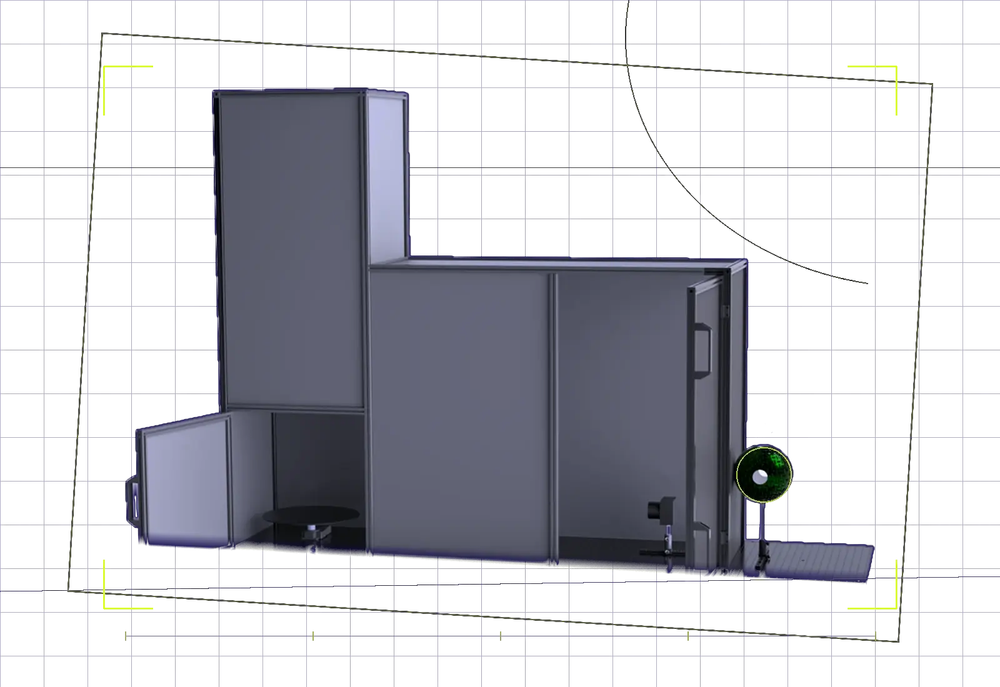
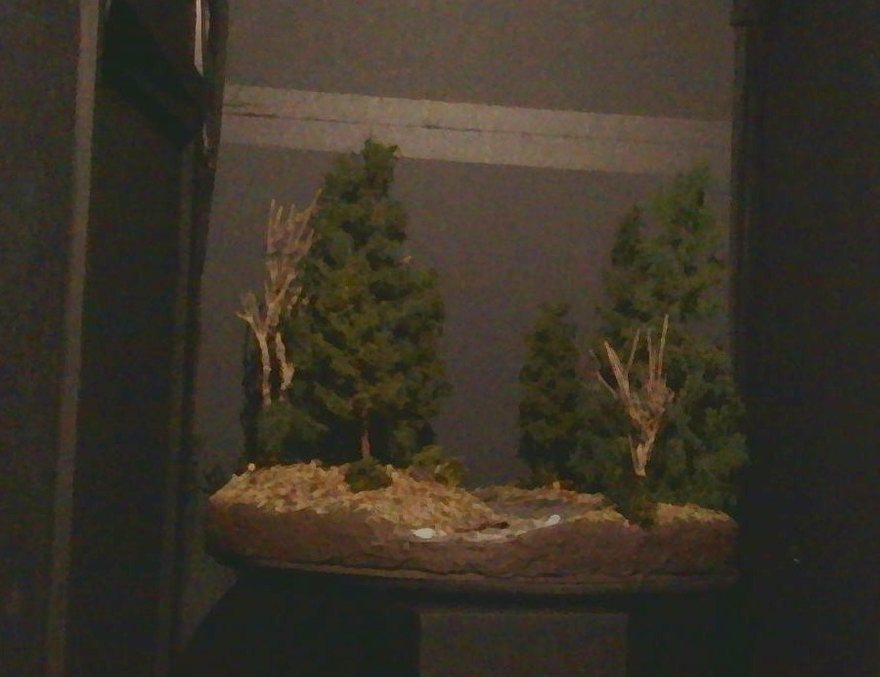
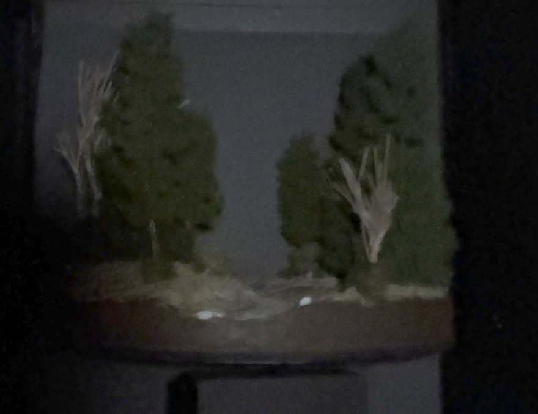
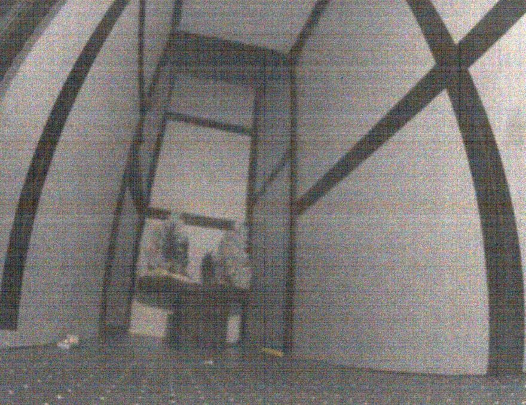
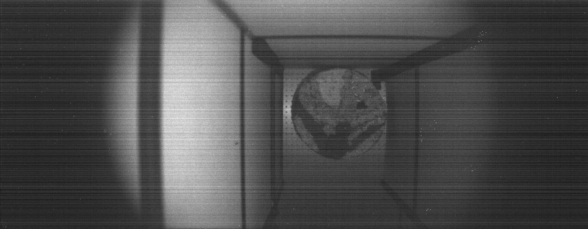

Built around
your sensor.
Beyond the standard night levels,
we produce acquisitions tailored to your sensor.
contact@3l-optronics.com

An aligned, physically realistic,
low-light dataset.




01 / The project
Captured under standardized nighttime illumination, our dataset recreates realistic outdoor scenarios across defined levels of darkness.
Each acquisition follows controlled lighting conditions, enabling reliable and reproducible evaluation.
| Network | PSNR | SSIM | LPIPS | NIQE | Inference time (ms) |
|---|---|---|---|---|---|
| SCI | 37.68 | 0.8673 | 0.6905 | 29.07 | 2.08 |
| EnlightenGAN | 36.66 | 0.8676 | 0.0801 | 24.04 | 58.14 |
| Zero-DCE | 37.90 | 0.8693 | 0.7785 | 10.47 | 26.21 |
| KinD | 41.98 | 0.9298 | 0.0277 | 16.01 | 87.22 |
| URetinex-Net++ | 40.95 | 0.9158 | 0.0311 | 20.87 | 254.01 |
| WaveMamba | 54.80 | 0.9808 | 0.0013 | 21.71 | 1322.63 |
| MambaIR | 51.85 | 0.9614 | 0.0011 | 21.36 | 9199.43 |
| RetinexFormer | 44.64 | 0.9687 | 0.0210 | 17.78 | 541.14 |
PSNR and SSIM are higher-is-better,
while LPIPS, NIQE and the inference time are lower-is-better.
02 / In pictures

03 / As-a-service
The dataset published here relies on our standard night levels. The same calibrated bench can be reconfigured
for your own requirements.
Beyond the standard night levels,
we produce acquisitions tailored to your sensor.
We evaluate the ability of a sensor to see at night on the
calibrated bench, and compute the associated metrics,
either on our standard night levels
or on the specifications you define.
04 / Inside the dataset
| Block | Content | Purpose | Status |
|---|---|---|---|
| 01Images | Low-light paired acquisitions | Provide the raw material | Available |
| 02Classes | One folder per illumination level (n0, n1,…): the folder name is the label | Enable supervised training and evaluation | Available |
| 03Metadata | One JSON file per folder: image name and stage angle in degrees for each image, plus session time, integration time, start and end angles | Make results comparable and reproducible | Available |
| 04Paper | Scientific article and arXiv link | Document the method and make the dataset citable | Available |
05 / Examples
Touch to zoom
Actual captures from the dataset,
taken at different illumination levels.
06 / Resources
Read the paper on arXiv and download the dataset sample on Hugging Face.
A specific need?